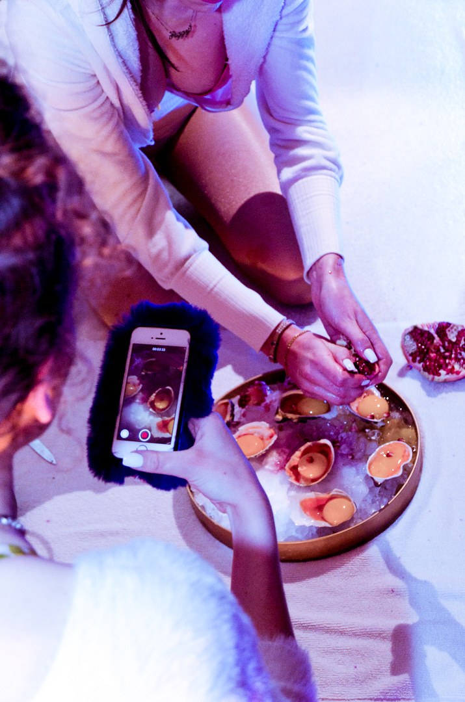

Performance. 2018. Performed at Sprechsaal, Berlin as part of the «Breathing the ultimate wave #feminismandclass 2018» series of events. Image courtesy of Lea Hopp.
Octopussy's Garden
_We touch you. Your cold skin is pressing against our fingertips. We let our nail wander across your redness, scratch your skin and instantly there is a drop._
Autonomous Sensory Meridian Response (ASMR) ist ein Phänomen, bei dem sich durch das Erleben von Sounds und Visuals ein entspannendes Kribbeln im Körper ausbreitet. Zu dem Phänomen, das seit 2011 unter dem Begriff ASMR bekannt geworden ist, gibt es online eine wachsende Community. Von Homevideos bis zu aufwendigen Studioaufnahmen geht es darum, intensive Trigger zu produzieren. Von Whispering, Tapping, Hairbrushing bis zum Kidnapping Roleplay — es gibt nichts, was es nicht schon als ASMR Video gibt.
2015 haben wir das erste Video auf dem YouTube-Channel BarbieASMR veröffentlicht. 2018 gibt es 8 Videos und über 1,2 Mio. Klicks. Peggy Bigott, die in BarbieASMR repräsentierte Figur, stammt aus der Performance-Reihe «Bigott Bar,» für die wir seit 2014 Videos produzieren. BarbieASMR beschäftigte sich zu Beginn vor allem mit der Ästhetik weiblicher Repräsentation online. ASMR ist als Genre interessant, weil hier die Inhalte vor allem von weiblichen «ASMRtists» bereitgestellt werden. Obwohl die Community stark darauf bedacht ist, das Phänomen ASMR von sexueller Lust abzugrenzen, wird auf eine heterosexuell pornographische Bildsprache zurückgegriffen, der Bildausschnitt zeigt oft das Dekollete und den Mund in Nahaufnahme und die Hände mit langen Nägeln.
Image courtesy of Lea Hopp.
In der Beschäftigung mit ASMR suchen wir eine neue Sinnlichkeit — ASMR Videos als post-pornographisches Trigger Programm. Die den Videos eigene gedehnte Zeitlichkeit und der Verzicht auf Narration, Dramatik und Höhepunkte, interessieren uns als die «performative excessiveness» des Post-Porn, durch die das Regime der sexuellen Repräsentation untergraben wird.
_When we touch someone, they touch us equally._
Octopussy’s Garden
Nastja Antonenko und Magdalena Emmerig
Sound: Georgi Tomov Georgiev
Fotos: Josephin Hanke, Lea Hopp, Soon-Hwoa Jeong
Danke an Kara Schröder
Die Veranstaltung fand statt im Rahmen von Breathing the ultimate wave #feminismandclass 2018 im Sprechsaal Berlin.